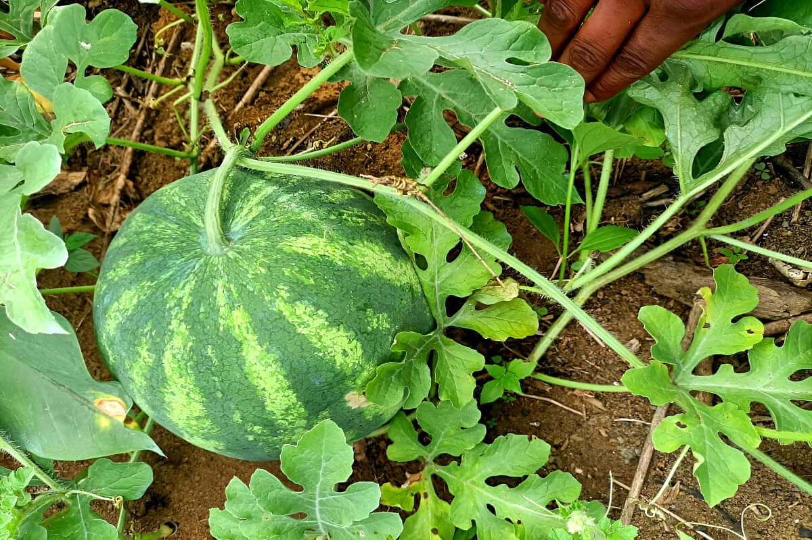
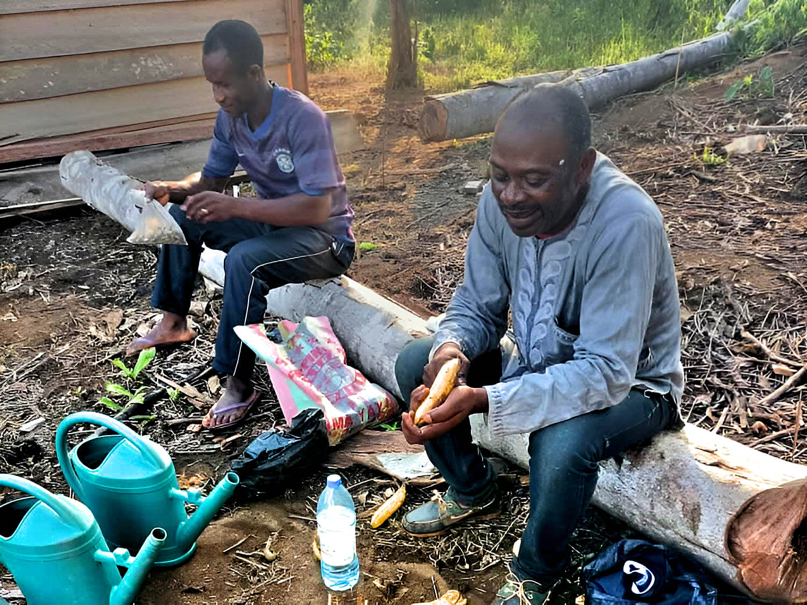
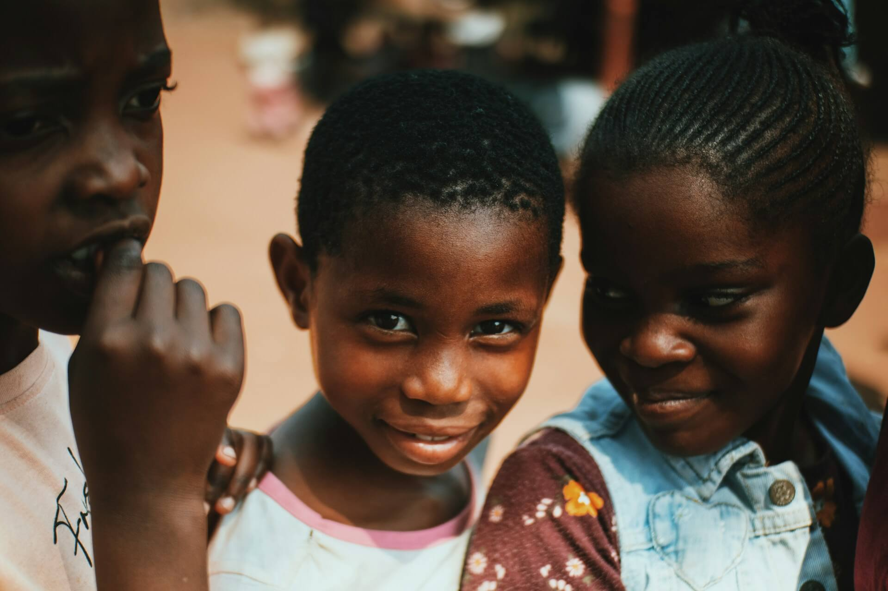

Une entreprise agricole au cœur d’un écosystème territorial
ROMBONE est une entreprise agricole pensée comme un outil économique au service de son territoire. Son modèle articule production, transmission des compétences et contribution territoriale.
Notre modèle repose sur une conviction : une contribution durable au territoire suppose d'abord une exploitation structurée, productive et économiquement viable. Les activités de formation et les contributions territoriales se construisent ensuite autour de cet outil de production réel.
Cette approche crée de la valeur à plusieurs niveaux : économique par l'activité de l'entreprise, pédagogique grâce aux partenariats de formation, et territoriale par les emplois, les compétences et les contributions que l'exploitation peut progressivement soutenir.

Polyculture maraîchère raisonnée orientée vers la sécurité alimentaire. Nous privilégions les pratiques agricoles respectueuses des sols, la rotation des cultures et une gestion optimisée des intrants.
Notre production n'est pas expérimentale : elle s'appuie sur des techniques éprouvées, adaptées au contexte d'Ebolowa et de la région du Sud.
La structuration est au cœur de notre démarche. Chaque parcelle est organisée, chaque cycle de culture planifié, chaque récolte documentée. Cette rigueur garantit la qualité et permet d'améliorer progressivement le modèle.
ROMBONE concentre d'abord ses efforts sur la réussite de son exploitation à Ebolowa. Les choix de développement futurs seront fondés sur les résultats obtenus : production, débouchés, équilibre économique, emplois créés et qualité des partenariats.

Le partenariat avec le CRA permet à ROMBONE d’ouvrir son exploitation comme terrain réel d'apprentissage agricole.
La convention structure notre collaboration : le CRA apporte son expertise agronomique et pédagogique ainsi que l’encadrement pédagogique théorique et oriente ses apprenants vers nos parcelles. ROMBONE met à disposition son exploitation, ses infrastructures et les conditions réelles de production. Les apprenants bénéficient ainsi d'une formation articulant théorie et pratique en conditions réelles.
Chaque parcelle de ROMBONE est un espace de transmission. Les apprenants du CRA participent activement aux cycles de production, de la préparation des sols à la récolte, en passant par l'entretien cultural et la gestion phytosanitaire.
Cette approche pédagogique intégrée crée un cercle vertueux : la production bénéficie d'une main-d'œuvre formée et engagée, tandis que les apprenants acquièrent des compétences concrètes immédiatement valorisables sur le marché du travail agricole.

ROMBONE recherche d'abord des débouchés économiques durables pour sa production. À mesure que ses capacités se consolident, l'entreprise pourra également contribuer, avec NZUANE et ses partenaires, à des programmes éducatifs ou sociaux du territoire.
Au-delà de la production et de la formation, ROMBONE s'inscrit dans une dynamique de développement territorial. Création d'emplois locaux, structuration de filières, dynamisation de l'économie locale : sa contribution dépasse progressivement le seul cadre de la production agricole.
ROMBONE concentre ses responsabilités sur l'entreprise et l'exploitation, tout en s'appuyant sur des partenaires spécialisés.
La direction fixe les orientations, pilote les ressources et veille à la viabilité économique et à la pérennité de ROMBONE.
L'exploitation est organisée autour de la planification des cultures, du suivi des parcelles, de la production et de la commercialisation.
ROMBONE fait appel aux compétences pédagogiques, agronomiques, techniques ou institutionnelles de partenaires lorsque leur expertise est nécessaire.
NZUANE porte la vision territoriale et ses programmes. ROMBONE apporte l'outil économique agricole qui peut progressivement contribuer à cette dynamique.
Ebolowa
Installation et structuration à Ebolowa. Mise en place des parcelles, partenariats locaux, premiers cycles de production-formation.
Ebolowa
Stabilisation des capacités de production, des débouchés, de l'organisation opérationnelle et des partenariats. Mesure des résultats et amélioration du modèle.
Selon les résultats
Développement de nouvelles capacités de production ou de nouveaux sites uniquement lorsque les résultats économiques et opérationnels du modèle initial le justifient.
Partenaire technique, pédagogique, institutionnel, économique ou financier : parlons de collaborations concrètes.